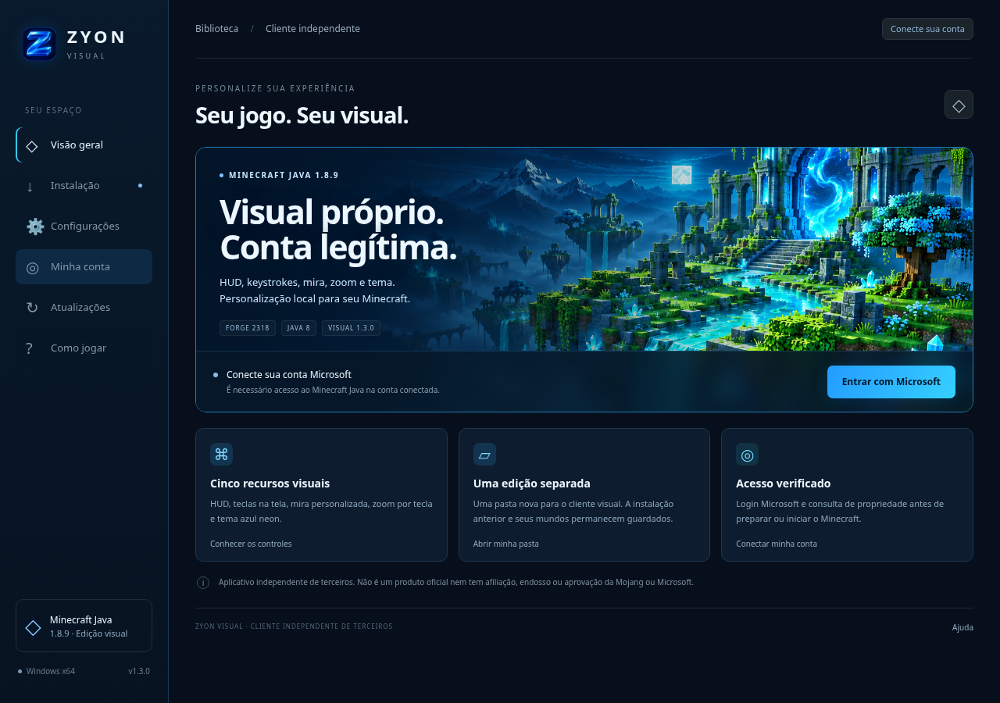

HUD
Marca Zyon, FPS, suas coordenadas e recursos visuais ativos. Escolha o que aparece na tela.
HUD, teclas na tela e o seu jeito de jogar.
Conheça a edição visual do Zyon: cinco recursos locais, em azul neon.
Um painel organizado, busca e ajustes por recurso. Passe o mouse no botão ? para entender cada opção antes de ativar.
Marca Zyon, FPS, suas coordenadas e recursos visuais ativos. Escolha o que aparece na tela.
Teclas, botões do mouse e cliques por segundo. Arraste o painel e ajuste tamanho, cor e transparência.
Personalize o tamanho, o espaço central e o ponto sobre a mira padrão, em primeira pessoa.
Segure C para ampliar a imagem. Escolha o fator de aproximação no painel, sem depender do OptiFine.
Azul neon, outras cores, opacidade e cores animadas. Fundo noturno de cerejeiras no menu inicial.
Contas, arquivos e atualizações em um só lugar. O launcher verifica a propriedade do Minecraft antes de preparar ou iniciar o jogo.
A nova edição usa uma pasta separada. Seus mundos e arquivos anteriores permanecem na pasta original; somente configurações visuais compatíveis são recuperadas.
Abrir o guia do jogador
Feche o Zyon e o Minecraft, baixe o instalador da edição visual e siga as etapas. Requer Windows 10/11 x64 e internet.
Confirme o código na página oficial aberta pelo navegador. Use uma conta com acesso ao Minecraft Java. Sua senha fica na Microsoft.
Quando o serviço autorizar o aplicativo e sua conta, o Zyon baixa os arquivos oficiais, o Forge e o Java 8. O acesso é verificado novamente ao jogar.
Aprenda a instalar, conectar sua conta e personalizar o Zyon. Escolha um assunto para abrir as instruções nesta página.
Você precisa de Windows 10 ou 11 de 64 bits, conexão com a internet e uma conta Microsoft com acesso ao Minecraft Java.
O launcher prepara o Java 8 e os arquivos necessários quando o serviço oficial autoriza o aplicativo e verifica o acesso da sua conta. Você não precisa instalar o OptiFine para usar o zoom do Zyon.
A nova solicitação de análise foi enviada, mas ainda não há confirmação de aprovação. Enquanto o serviço recusar o acesso, preparar e jogar ficam bloqueados. Instalar uma atualização não concede autorização.
Não compartilhe códigos de login ou tokens. Esta edição exige conta Microsoft e verificação de propriedade; não oferece entrada apenas por nick.
Dentro do jogo, pressione Shift direito para abrir o painel. Use a busca ou as categorias para encontrar um recurso. Selecione o nome para ver os ajustes e use o interruptor para ativar ou desativar.
Passe o mouse sobre ? para ler a ajuda de uma função. End oculta os extras e Esc fecha o painel. Se uma tecla estiver em conflito, confira Opções › Controles › Zyon no Minecraft.
A posição e o estilo ficam nos perfis locais e acompanham a resolução da tela. Os atalhos exibidos acompanham seus controles do Minecraft.
A edição visual usa uma pasta nova, separada da instalação anterior. Seus mundos antigos continuam na pasta original.
Os mods antigos não são migrados. Se uma pasta contiver mods externos, escolha uma pasta nova para a edição visual. Os arquivos existentes são preservados.
Os ajustes visuais são salvos automaticamente. No painel de perfis, você também pode salvar e carregar conjuntos de preferências com um nome escolhido por você.
Esta edição reúne HUD, keystrokes arrastáveis, mira, zoom próprio e tema azul neon. O código antigo de combate, movimento automatizado, visualização de entidades e outras automações foi removido. A entrada por nick, a importação de OptiFine e as capas de terceiros também foram retiradas.
O launcher consulta novas versões ao abrir e periodicamente. Você também pode usar Atualizações › Verificar agora.
Os dados em AppData são preservados. Se você estiver sem internet ou com o Zyon fechado, a próxima consulta acontece depois. A atualização não aprova o aplicativo junto à Microsoft.
O que está incluído e o que ainda depende dos serviços oficiais.
Somente se os serviços oficiais autorizarem o aplicativo e confirmarem o acesso ao Minecraft Java na sua conta. O pedido anterior foi recusado; esta versão foi preparada para nova análise. Publicar ou instalar o Zyon não concede essa autorização, e o login real ainda precisa ser validado após a autorização.
Esta edição exige login Microsoft e propriedade verificada antes de preparar e a cada abertura. Não há login por nick nem fallback sem autenticação. Se estiver sem internet ou o serviço recusar o acesso, a operação é interrompida.
Ficaram HUD, keystrokes, mira, zoom e tema. O código de combate, movimento automatizado, visualização de entidades e outras automações foi removido. Esta edição não importa OptiFine, não fornece capas de terceiros e recusa mods externos na sua instância.
A edição visual começa em uma pasta nova, sem apagar a instalação anterior. Em Configurações, use Abrir pasta da instalação anterior para localizar seus dados. Se quiser transferir um mundo, faça backup e copie apenas a pasta dele em saves com o jogo fechado. Mods antigos não são migrados.
Não há promessa de ganho de FPS. Você pode configurar memória no launcher e ajustar distância de visão e limite de FPS nas opções de vídeo do Minecraft, conforme o seu computador.
O launcher consulta as releases públicas ao abrir e periodicamente. Quando há uma versão nova, oferece a instalação e verifica o arquivo pelo SHA-256 publicado. Você escolhe quando atualizar. PCs desligados ou sem internet verificam depois.
Não. É um aplicativo independente de terceiros, sem afiliação, endosso ou aprovação da Mojang ou Microsoft. Minecraft é uma marca de seus respectivos titulares. Versões antigas no histórico não representam a edição visual atual.
Instalador Windows x64 · v1.3.10 · cinco recursos visuais
Autorização Microsoft/Minecraft pendente. O download permite instalar o aplicativo; preparar e jogar dependem da verificação oficial de acesso.